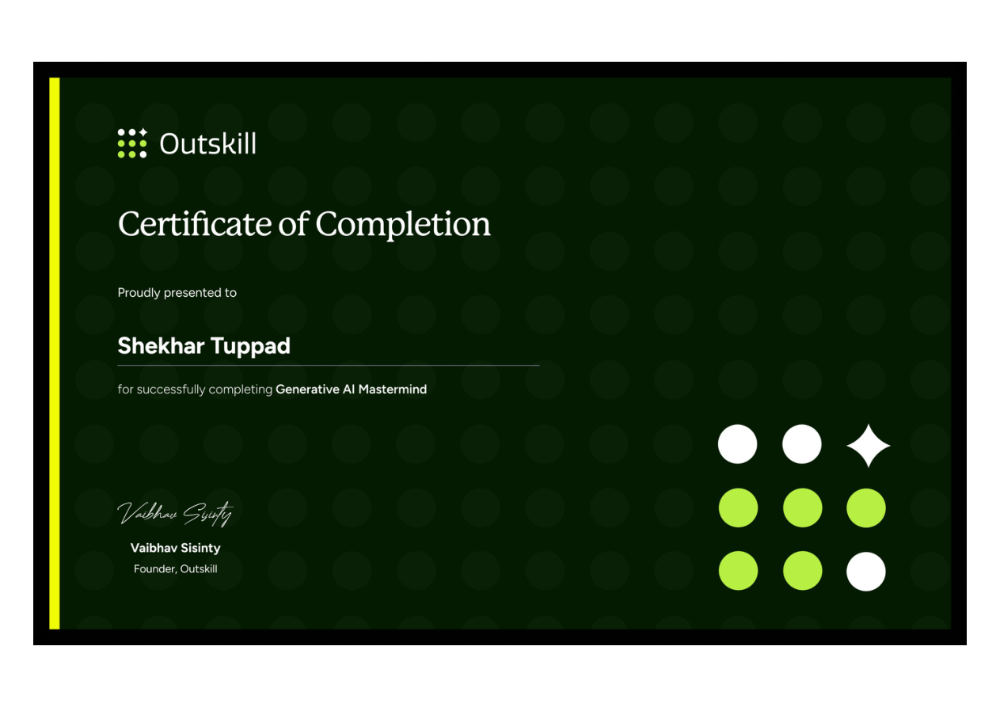

CERTIFICATE
Generative AI Mastermind
Certificate of Completion awarded to Shekhar Tuppad by Outskill.
ACHIEVEMENTS & CERTIFICATES
Certificates, workshops, competitions and other milestones can be documented here.

CERTIFICATE
Certificate of Completion awarded to Shekhar Tuppad by Outskill.